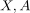
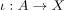
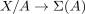
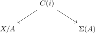
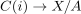
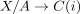

map from the collapse of a cofibration to the suspension
1. Proposition
let

be topological spaces and
a cofibration. Then there exists a canonical map
canonical up to homotopy
2. Proof
there exist

where

is a Homotopy equivalence (cf. map from the mapping cone of a cofibration to the collapse as homotopy equivalence)Choose a homotopy inverse

, which is unique up to homotopy, hence